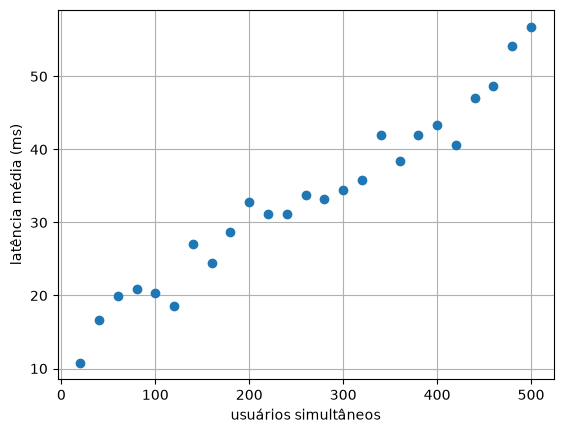
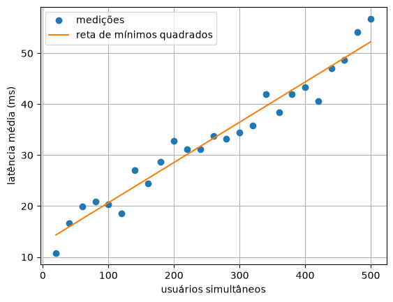
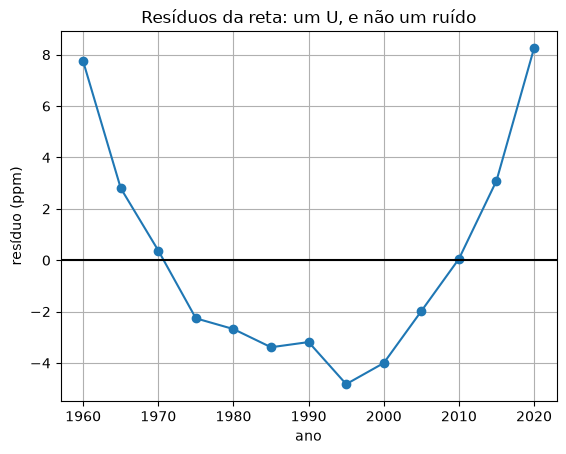

14. Regressão linear¶
A interpolação da Unidade 5 fazia uma curva passar exatamente por todos os pontos. Isso faz sentido quando os pontos são exatos: um catálogo, uma tabela calculada. Com medições, não: cada medição traz um pouco de ruído, e uma curva obrigada a passar por todas elas passa também pelo ruído, oscilando sem motivo (capítulo 11).
A regressão faz outra pergunta: qual a curva mais simples que passa perto de todos os pontos, errando o mínimo possível? Com uma reta, é a regressão linear, a ferramenta mais usada de toda a análise de dados. E, surpresa, ela se resolve com um sistema linear 2 × 2, da Unidade 4.
Dados com ruído¶
🌍 Contexto: a latência de um servidor
Quanto mais usuários acessam um site ao mesmo tempo, mais demora cada resposta: é a latência, em milissegundos. Uma equipe de infraestrutura mede a latência média em várias cargas para saber quantos usuários o servidor aguenta antes de ficar lento. Cada medição varia um pouco (o que mais estava rodando, a rede naquele instante).
# Latencia de um servidor web (ms) x usuarios simultaneos. As medicoes tem
# ruido: passar uma curva EXATAMENTE por todas elas faz sentido?
import numpy as np
import matplotlib.pyplot as plt
dados = np.loadtxt("latencia_servidor.csv", delimiter=",", skiprows=1)
usuarios = dados[:, 0]
latencia = dados[:, 1]
print(f"{len(usuarios)} medicoes, de {usuarios[0]:.0f} a {usuarios[-1]:.0f} usuarios")
plt.figure()
plt.plot(usuarios, latencia, "o")
plt.xlabel("usuários simultâneos")
plt.ylabel("latência média (ms)")
plt.grid()
plt.show()

Os pontos seguem uma reta, mas não estão em cima dela. Um polinômio de grau 24 passando por todos seria absurdo. O que se quer é a reta que melhor os representa.
No quadro: mínimos quadrados¶
🧑🏫 No quadro — a reta de mínimos quadrados
1. Para uma reta \(\hat y = a_0 + a_1 x\), o resíduo de cada ponto é o quanto a reta erra ali: \(e_i = y_i - (a_0 + a_1 x_i)\).
2. Uns resíduos são positivos, outros negativos, e somá-los não serve (eles se cancelam). Some os quadrados:
A melhor reta é a que dá o menor \(S\): daí o nome, mínimos quadrados.
3. No mínimo, as duas derivadas parciais valem zero (como no capítulo 6, agora com duas variáveis):
4. Rearrumando, saem as equações normais, um sistema linear 2 × 2:
5. Os ingredientes são quatro somas; a resolução é a do capítulo 7.
# A reta que erra menos: minimos quadrados. As duas equacoes normais formam
# um sistema linear 2 x 2 nos coeficientes a0 (intercepto) e a1 (inclinacao).
import numpy as np
import matplotlib.pyplot as plt
dados = np.loadtxt("latencia_servidor.csv", delimiter=",", skiprows=1)
x = dados[:, 0]
y = dados[:, 1]
n = len(x)
A = np.array([[n, np.sum(x)],
[np.sum(x), np.sum(x**2)]])
b = np.array([np.sum(y), np.sum(x * y)])
a0, a1 = np.linalg.solve(A, b)
print(f"reta: latencia = {a0:.3f} + {a1:.5f} * usuarios")
print(f"previsao para 600 usuarios: {a0 + a1 * 600:.1f} ms")
plt.figure()
plt.plot(x, y, "o", label="medições")
plt.plot(x, a0 + a1 * x, label="reta de mínimos quadrados")
plt.xlabel("usuários simultâneos")
plt.ylabel("latência média (ms)")
plt.grid()
plt.legend()
plt.show()

A reta diz que o servidor tem uma latência de base de cerca de 12,8 ms e que cada usuário a mais acrescenta 0,079 ms. Com ela, a equipe prevê a latência com 600 usuários (60 ms), numa carga que ainda não foi testada, mas próxima das testadas.
A linha a0, a1 = np.linalg.solve(A, b) recebe os dois números da solução em dois
nomes de uma vez, como o valor, erro = quad(...) do capítulo 12.
Quão boa é a reta¶
Uma reta sempre pode ser calculada, mesmo para pontos que não têm nada de reta. Duas
medidas dizem se ela serve. Elas usam a média, que o numpy também calcula.
🧰 Comando novo: np.mean
np.mean(a) é a média dos elementos: a soma dividida pela quantidade.
O coeficiente de determinação \(R^2\) compara o erro da reta com o erro de "chutar a média" para todo mundo:
\(R^2 = 1\) quer dizer que a reta passa por todos os pontos; \(R^2 = 0\), que ela não explica nada além da média.
# Quao boa e a reta? O coeficiente de determinacao R²: a fracao da variacao
# de y que a reta explica. 1 = perfeita; 0 = a reta nao explica nada.
import numpy as np
dados = np.loadtxt("latencia_servidor.csv", delimiter=",", skiprows=1)
x = dados[:, 0]
y = dados[:, 1]
n = len(x)
A = np.array([[n, np.sum(x)], [np.sum(x), np.sum(x**2)]])
b = np.array([np.sum(y), np.sum(x * y)])
a0, a1 = np.linalg.solve(A, b)
previsto = a0 + a1 * x
residuos = y - previsto
sq_residuos = np.sum(residuos**2) # o que a reta NAO explica
sq_total = np.sum((y - np.mean(y))**2) # a variacao total em torno da media
r2 = 1 - sq_residuos / sq_total
print(f"R² = {r2:.4f}")
print(f"desvio tipico dos residuos: {np.sqrt(sq_residuos / (n - 2)):.2f} ms")
A reta explica 95 % da variação da latência. O resto (desvio típico de 2,6 ms) é o ruído das medições.
Os resíduos contam o resto da história¶
Um \(R^2\) alto não garante que a reta seja o modelo certo. O teste de verdade é olhar os resíduos: se a reta está certa, eles são ruído, espalhados sem padrão em volta de zero. Se há um padrão, a reta está deixando algo de fora.
🌍 Contexto: o CO₂ de Mauna Loa
Desde 1958, o observatório de Mauna Loa, no Havaí, mede a concentração de gás carbônico no ar, longe de cidades e indústrias. A série, em partes por milhão (ppm), é o registro mais famoso do aumento do CO₂ na atmosfera.
# Os residuos contam o que a reta deixou de fora. CO2 na atmosfera (Mauna Loa):
# uma reta tem R² alto -- mas olhe os residuos.
import numpy as np
import matplotlib.pyplot as plt
dados = np.loadtxt("co2_mauna_loa.csv", delimiter=",", skiprows=1)
ano = dados[:, 0]
co2 = dados[:, 1]
n = len(ano)
A = np.array([[n, np.sum(ano)], [np.sum(ano), np.sum(ano**2)]])
b = np.array([np.sum(co2), np.sum(ano * co2)])
a0, a1 = np.linalg.solve(A, b)
residuos = co2 - (a0 + a1 * ano)
r2 = 1 - np.sum(residuos**2) / np.sum((co2 - np.mean(co2))**2)
print(f"reta: {a1:.3f} ppm por ano, R² = {r2:.4f}")
print("residuos:", np.round(residuos, 1))
plt.figure()
plt.plot(ano, residuos, "o-")
plt.axhline(0, color="black")
plt.xlabel("ano")
plt.ylabel("resíduo (ppm)")
plt.title("Resíduos da reta: um U, e não um ruído")
plt.grid()
plt.show()
reta: 1.614 ppm por ano, R² = 0.9815
residuos: [ 7.7 2.8 0.4 -2.3 -2.7 -3.4 -3.2 -4.8 -4. -2. 0.1 3.1 8.3]

💥 Quebre o método
\(R^2 = 0{,}98\), e a reta está errada. Os resíduos formam um U perfeito: positivos no começo, negativos no meio, positivos no fim. É a marca de uma curva que acelera: o CO₂ não cresce a um ritmo constante, cresce cada vez mais depressa. A reta subestima o presente e, pior, subestimaria o futuro. Sempre olhe o gráfico dos resíduos. O próximo capítulo ajusta uma curva.
Correlação não é causalidade¶
Uma reta bem ajustada diz que \(x\) e \(y\) andam juntos, e não que um causa o outro. As vendas de sorvete e os afogamentos em praias sobem juntos no verão; nenhum causa o outro, os dois são causados pelo calor. Numa regressão, a pergunta "por quê?" continua sendo trabalho de quem conhece o problema.
Confira com a biblioteca¶
🧰 Comando novo: np.polyfit
np.polyfit(x, y, g) devolve os coeficientes do polinômio de grau g que melhor
se ajusta aos pontos, por mínimos quadrados. Atenção à ordem: o coeficiente
do grau mais alto vem primeiro. Para uma reta, np.polyfit(x, y, 1) devolve
[inclinação, intercepto], o contrário da ordem \(a_0, a_1\) das equações normais.
# Confira com a biblioteca.
import numpy as np
dados = np.loadtxt("latencia_servidor.csv", delimiter=",", skiprows=1)
x = dados[:, 0]
y = dados[:, 1]
coef = np.polyfit(x, y, 1) # grau 1: uma reta
print("np.polyfit:", coef) # ATENCAO: [inclinacao, intercepto] -- o grau mais alto primeiro
Mesmo método, outra área¶
🌍 Contexto: o recorde dos 100 metros
Desde que a cronometragem passou a ser eletrônica (1968), o recorde mundial dos 100 m rasos masculino caiu de 9,95 s (Jim Hines) para 9,58 s (Usain Bolt, 2009).
# Mesmo metodo, outra area: o recorde mundial dos 100 m rasos, de 1968 a 2009.
import numpy as np
dados = np.loadtxt("recordes_100m.csv", delimiter=",", skiprows=1)
ano = dados[:, 0]
tempo = dados[:, 1]
coef = np.polyfit(ano, tempo, 1)
a1 = coef[0]
a0 = coef[1]
print(f"o recorde cai {-a1 * 100:.2f} segundos por seculo")
print(f"previsao para 2030: {a0 + a1 * 2030:.2f} s")
print(f"ano em que o recorde seria 0 s: {-a0 / a1:.0f}")
o recorde cai 0.80 segundos por seculo
previsao para 2030: 9.54 s
ano em que o recorde seria 0 s: 3229
A reta diz que o recorde cai 0,8 s por século e prevê 9,54 s em 2030, uma previsão razoável, perto dos dados. A mesma reta diz que, no ano 3229, os 100 m seriam corridos em zero segundos. É a extrapolação do capítulo 10 de novo: fora da faixa dos dados, o modelo não sabe nada. Há um limite físico que a reta ignora.
Erros comuns deste capítulo¶
| Sintoma | Causa provável |
|---|---|
| inclinação e intercepto trocados | np.polyfit devolve do grau mais alto para o mais baixo: [a1, a0] |
| \(R^2\) negativo | a reta foi calculada errada (ou com outros dados): mínimos quadrados sempre dá \(R^2 \geq 0\) |
| reta boa, previsões ruins | extrapolação: previsão longe da faixa dos dados |
| \(R^2\) alto, mas o modelo está errado | resíduos com padrão (curva, crescimento do espalhamento): olhe o gráfico dos resíduos |
| concluir que \(x\) causa \(y\) | correlação não é causalidade |
Onde isso é usado de verdade¶
- Engenharia e ciência: calibrar sensores (a reta que converte a leitura em grandeza física), estimar constantes físicas a partir de experimentos.
- Computação e redes: planejar a capacidade de servidores e links (quanto a latência ou o tráfego cresce com os usuários).
- Economia e negócios: tendência de vendas, custo em função da produção.
- Saúde: curvas de referência (peso por altura), dose por peso corporal.
- Aprendizado de máquina: a regressão linear é o primeiro modelo de todo curso de machine learning, e as redes neurais são, no fundo, regressões muito maiores.
Resumo¶
- Com medições que têm ruído, não se interpola: ajusta-se a curva que erra menos.
- Mínimos quadrados: minimizar a soma dos quadrados dos resíduos. Para a reta, isso dá as equações normais, um sistema 2 × 2 com quatro somas.
- \(R^2\) mede quanto da variação a reta explica. Mas só o gráfico dos resíduos diz se o modelo está certo.
np.polyfit(x, y, 1)confere, devolvendo[inclinação, intercepto].- Correlação não é causalidade, e extrapolação é perigosa.
Para praticar¶
A Lista 14 começa com uma regressão à mão (✏️) e segue com o \(R^2\), a calibração de um sensor, a correlação e a previsão com e sem extrapolação.